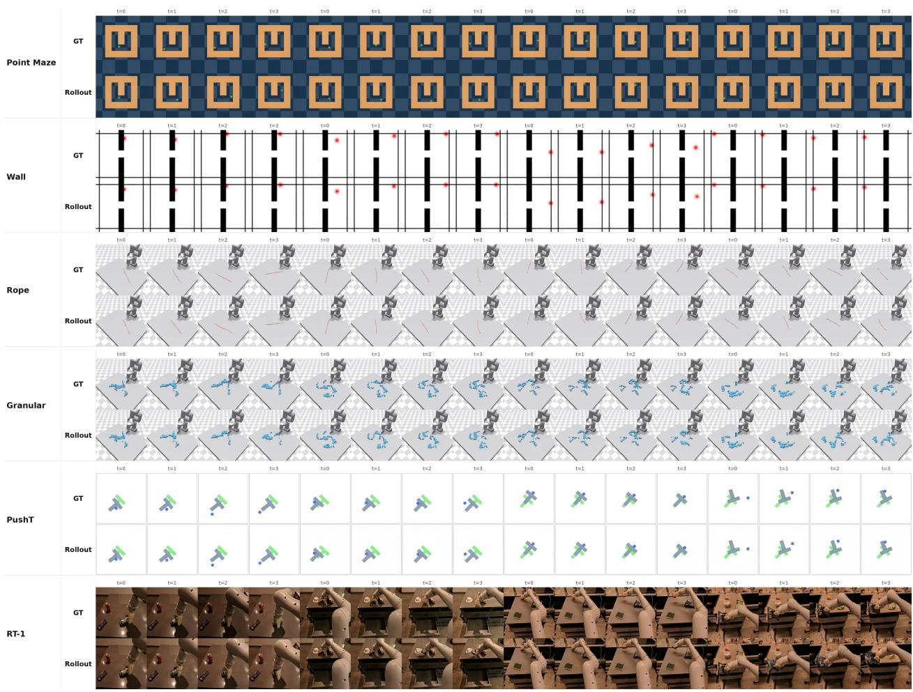

Data Figure 1: OverviewData Figure 1: Overview. Nano World Models is a minimalist and modular framework for future video prediction and world modeling. It supports diverse environments and training data, encodes observations into latent spaces, and predicts future observations with a shared diffusion-forcing interface that can accommodate different objectives, model sizes, and action-conditioning mechanisms. The same model interface enables realtime simulation, test-time planning, and video-to-3D applications, while the project fully opensources code, model weights, and data to support reproducible study of world-model design choices.这张图概括 Nano World Models 的整体方法流程。阅读时先看模块之间传递的训练信号，再看作者如何把目标拆成可优化的子问题。

Figureure 2 · : Qualitative rollouts across domainsFigure 2: Qualitative rollouts across domains. Representative ground-truth (GT) sequences and Nano World Models rollouts from Point Maze, Wall, Rope, Granular, PushT, and RT-1. The same dataset and environment interface exposes these domains to the training and sampling code, allowing grid-world navigation, simulated control, and robot-video prediction to be compared under a shared rollout format.这张图来自论文 PDF 的结构化抽取。当前用于辅助理解 Nano World Models 的方法或实验，请结合正文精读段落一起看。